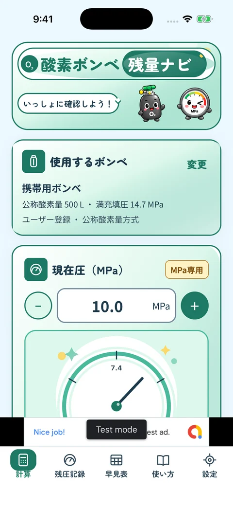

使用時間の目安
現在の圧力と流量から、酸素の使用可能時間の目安を計算。日々の見通しをサポートします。
計算も、残圧の記録も、ひとつに
圧力と流量から、使用時間の目安を確認。

画面の一部を掲載・数値は入力例です
現在の圧力と流量から、酸素の使用可能時間の目安を計算。日々の見通しをサポートします。
計算した時間と、使う予定の時間を見比べられます。外出の可否を判断する機能ではありません。
確認した残圧と日時を記録。過去の残圧を一覧で見返して、記録の整理に役立てられます。
いつもの操作を、5つの画面でご紹介します。
 拡大する
拡大する
ボンベを選び、圧力計で確認した現在圧と連続流量を入力。使用時間の目安を、時間・分・秒と分単位で確認できます。結果を確認してから、入力した残圧を記録することもできます。
 拡大する
拡大する
使うボンベの表示や資料を確認し、公称酸素量と満充填圧などを登録します。見分けやすい名前で管理でき、登録内容は後から編集・削除できます。患者名や患者IDは入力しないでください。
 拡大する
拡大する
予定時間を任意で入力すると、計算した使用時間との差を表示します。比較は入力条件に基づく目安です。患者さんの状態や、移動・外出の安全性を判断するものではありません。
 拡大する
拡大する
圧力計で確認した残圧と、その日時を手入力で保存します。ボンベの交換時は記録の区切りを切り替え、以前の記録も履歴から確認できます。連続・同調どちらでも記録できます。
 拡大する
拡大する
登録したボンベの条件で、圧力と連続流量ごとの使用時間を見比べられます。計算画面と同じ条件のセルを探せるので、数字の関係を確かめたいときや、使い方の振り返りにも役立ちます。
画面は入力例を使って撮影しています。表示するボンベの数値は、メーカー確認済みのプリセットではありません。
必要な情報を確認してから、使い始めましょう。
ボンベの表示や取扱説明書などから、公称酸素量・満充填圧などの仕様を確認して登録します。同じ見た目でも条件が異なる場合があるため、使用するボンベの資料に合わせてください。登録した内容は計算と早見表に反映されます。
圧力計で確認した現在圧をMPaで入力し、指示された連続流量を選びます。予定時間との比較が必要なときは、使う予定の時間も入力します。流量の選択肢は入力の補助であり、推奨する流量を示すものではありません。
計算した使用時間と入力条件を確認します。残圧を保存するときは、日時と記録先のボンベを確認してから記録します。使用中の実際の残圧は、保存した記録や計算値ではなく、圧力計でその都度確認してください。
酸素ボンベの使用時間を計算する場面には、入力する前の確認も、計算したあとの記録もあります。このアプリは、その前後の操作をまとめて使えるようにしています。
単に数値を表示するだけでなく、登録したボンベの条件、予定時間との差、確認日時付きの残圧記録、早見表を行き来できます。必要な機能を日本語のタブから選べるので、目的に合わせて確かめられます。
毎回ボンベの仕様を入力し直す手間を減らし、計算と早見表で同じ登録内容を使えます。使用前には、選択中のボンベを確認しましょう。
「使い方」タブで用語や操作、計算の前提を確認できます。手順を思い出したいときにも、アプリ内で読み返せます。
表示テーマやキャラクターの表示を設定できます。親しみやすい画面の中でも、圧力・流量・時間の数字を確認しやすい構成です。
アカウントを作らずに利用できます。登録したボンベ、設定、残圧と確認日時は端末内に保存し、アプリ独自のサーバーへ送信しません。患者名や患者IDは登録しないでください。
アプリには広告があります。計算入力・計算結果・残圧記録を広告リクエストに渡すことはありませんが、広告SDKによる端末情報などの取り扱いは発生します。OSのバックアップや外部サービスについても、ポリシーにまとめています。
プライバシーポリシーを読む看護師など酸素ボンベを扱う医療職の方や、医療スタッフから使い方の説明を受けた利用者・ご家族が、入力条件に基づく目安や確認した残圧を整理するためのアプリです。酸素流量を決める機能はありません。使用する機器の取扱説明書と、医療スタッフ・酸素供給業者の案内を優先してください。
使用時間の計算は、一定の連続流量で使う場合に対応しています。呼吸同調モードの使用時間や、人工呼吸器など装置全体のガス消費量は計算できません。呼吸同調モードでも、圧力計で確認した残圧と日時を記録する機能は使えます。
現在圧はMPaで入力します。kgf/cm²など別の単位の値をそのまま入力しないでください。圧力計の単位を確認し、単位や数値が分からない場合は機器の資料や医療スタッフ・酸素供給業者に確認してください。
ボンベとの接続や自動測定は行いません。計算にも記録にも、圧力計で確認した値を手入力します。保存された残圧は、記録した日時の値です。現在の残圧や供給状態は、実際の機器で確認してください。
アカウント登録は不要です。患者情報を入力する必要もありません。ボンベの名前には患者名・患者IDを入れず、ボンベを見分けるための名称を使ってください。残圧記録や登録したボンベ、設定は端末に保存します。広告や外部通信についてはプライバシーポリシーで説明しています。
保存した残圧は履歴から確認し、内容を編集・削除できます。設定では、ボンベごと、またはすべての残圧記録を削除できます。計算結果そのものの履歴は保存しません。大切な記録を削除する前に、対象のボンベや日時を確認してください。
現在、App Storeでの公開に向けて準備しています。配信が始まり次第、このページにダウンロード先を掲載します。掲載画像は開発中のアプリを撮影したもので、公開時の表示と一部異なる場合があります。
計算結果は、入力したボンベの条件・圧力・一定の連続流量から求める目安です。実際の使用可能時間を保証するものではありません。表示色やキャラクターの表情も、医療上の安全性を示すものではありません。
診断・治療や、酸素流量の決定を代替するものではありません。実際の機器の表示、取扱説明書、施設の手順、医療スタッフ・酸素供給業者の案内に沿ってご利用ください。